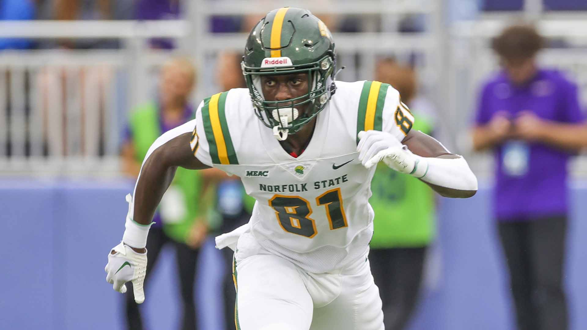

Michigan State TE
Physical Attributes and Skillset: Standing tall at an impressive height and possessing a muscular build, Faleye brings size and power to the field. His ability to outmuscle defenders during blocking assignments is a testament to his physical prowess. Additionally, his speed and agility enable him to excel in pass-catching situations, making him a dangerous weapon for his team's offense.
Work Ethic and Dedication: Off the field, Faleye's work ethic and dedication are apparent. His commitment to his craft is evident in his continuous improvement and willingness to put in the extra effort. Whether it's spending additional time in the weight room or studying film to understand defensive schemes, Faleye's dedication shines through in his performance.
Future Prospects: As Faleye continues to showcase his abilities and make an impact on the field, he is exciting as a future prospect. With his impressive skillset and dedication to his craft, he has the potential to thrive at the collegiate and possibly even at the professional level. Football enthusiasts eagerly await his continued growth and anticipate great things from him in the coming years.
Ademola Faleye during his time at Norfolk State
